[version_1.0.0]
After completing this exercise, you should be able to use CloudEndure Migration to migrate your on-premises machines to the AWS Cloud.
You have been given a new task. You have been asked to check the feasibility of migrating the Ghost application and database to the AWS EU (Frankfurt) Region (eu-central-1).
You know that CloudEndure Migration can work across Regions, so this time you decide to use CloudEndure Migration to see if the entire migration process can be automated. You will not re-platform to Amazon Aurora.
CloudEndure Account, confirm your email, and login to the portal.us-west-2 Ghost application that touches the database and the Ghost application static filesystem to understand where your data is stored.us-west-2 and install the CloudEndure Agent.eu-central-1.eu-central-1) to confirm that the migration was successful.%Access Console%
You will need a CloudEndure account to complete this exercise.
To sign up for a free account, do the following:
You will also need to set up an IAM user and an IAM policy that CloudEndure Migration can use to access AWS resources and an IAM policy.
To create the IAM policy:
From the AWS Management Console, go to the Services menu and search for IAM.
Choose Policies.
Choose Create policy.
Choose the JSON tab. Paste in the following policy from the site here:
xxxxxxxxxxhttps://aws-tc-largeobjects.s3-us-west-2.amazonaws.com/DEV-AWS-MO-Migration/lab-4-cloud-endure/iampolicy.jsonChoose Review policy. Ignore warnings.
Name the policy CloudEndure and choose Create policy.
To create the IAM user:
CloudEndure and choose Programmatic access.NOTE: Make sure to copy the access key ID and secret access key because this is the only time you will be able to see them. You will need these security credentials when you create your CloudEndure project in the next step.
Go back to the CloudEndure User Console. In the top left, choose the + sign to Create New Project.
Name the project ghost-migration and for Project type choose Migration. The target infrastructure Amazon Web Services and a license specific to you should auto-populate.
Choose CREATE PROJECT.
Choose START, and then choose CONTINUE.
Paste in the AWS Access Key and Secret Access Key of your CloudEndure IAM user.
Choose SAVE. For Migration Source choose AWS US West (Oregon).
For the Migration Target choose AWS EU (Frankfurt).
Leave the settings as default and choose SAVE REPLICATION SETTINGS.
On the Project setup complete pop-up choose SHOW ME HOW.
You will see instructions for Linux machines on the CloudEndure's website. These instructions will help you download and install the CloudEndure Agent, so keep this page open so that you can refer to it soon.
Return to the AWS Management Console. Choose Services and search for Cloud9. At the top right, make sure US West (Oregon) is selected.
Choose Open IDE. After the AWS Cloud9 IDE opens you can close the other AWS console tab.
Upload the PEM file. To do this, choose File and Upload Local Files. Either drag and drop the labsuser.pem file or choose Select files and browse to where your downloaded the labsuser.pem file.
To find the Private IP address of your application instance, run the following command:
xxxxxxxxxxaws ec2 describe-instances --filters "Name=tag:Name,Values=ApplicationInstance" | grep -i -m 1 "PrivateIpAddress"This should give you the IP address of your application instance and look similar to this example:
xxxxxxxxxx"PrivateIpAddress": "10.16.10.45" # yours may be differentTo shell into this on-premises us-west-2 application instance, run the following commands:
xxxxxxxxxxcd ~/environmentxxxxxxxxxxchmod 400 labsuser.pemxxxxxxxxxxssh -i labsuser.pem ubuntu@<FMI> #using your IP above#type yes when it asks, "Are you sure you want to continue connecting (yes/no)Now you need to prove that changes actually get propagated (migrated), so you need to make some changes to the application.
To get the Public IP address and visit your on-premises Ghost website, run the following curl command:
xxxxxxxxxxcurl http://169.254.169.254/latest/meta-data/public-ipv4You should see something similar to this example: 💁♂ Yours will be different.
xxxxxxxxxx54.71.249.79Open the following URL in a new browser tab, replacing <FMI> with your Public IP address:
xxxxxxxxxxhttp://<FMI>:2368You should see something similar to this example:
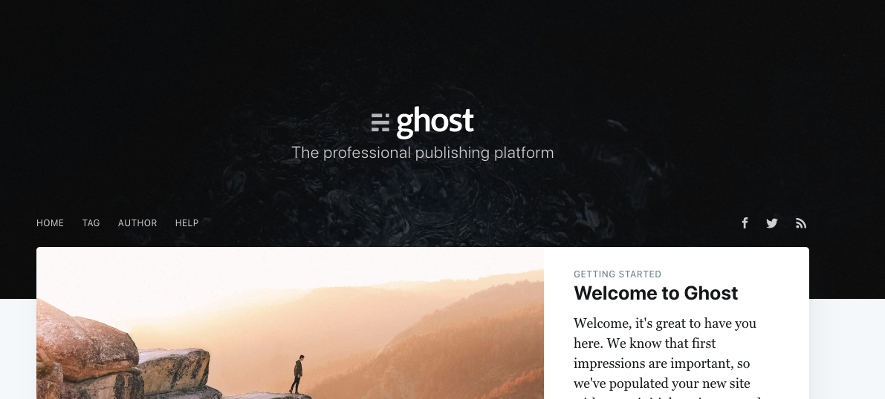
Now you want to adjust the site using the Ghost admin panel in such a way that the database and filesystem will get touched. You can then check that your changes were carried over in the migration.
Go to the admin panel of the site:
x
http://<FMI>:2368/ghost #using your Public IP as the <FMI>📓 You will need to follow the steps to creating the Ghost account on that machine, as shown below:
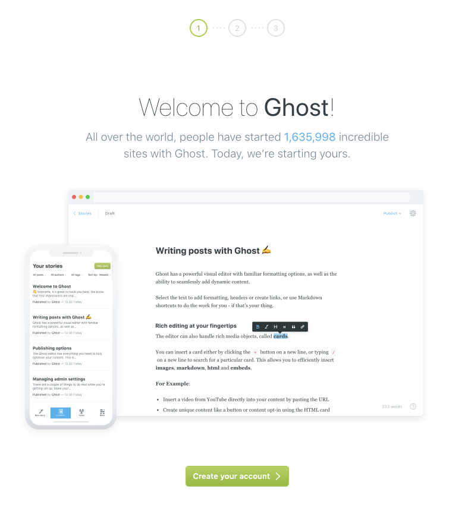
Choose Create your account.
For site title use:
xxxxxxxxxxmyghostappFor full name, use your name. You will need to provide an email (although it won't actually send an email because that has not been set up for this exercise).
You can choose any password you like, or you can just use the following password:
xxxxxxxxxxfoobarfoobar55Under Last step: Invite staff users, at the bottom choose I'll do this later.
You should see your admin area, which should look similar to this example:
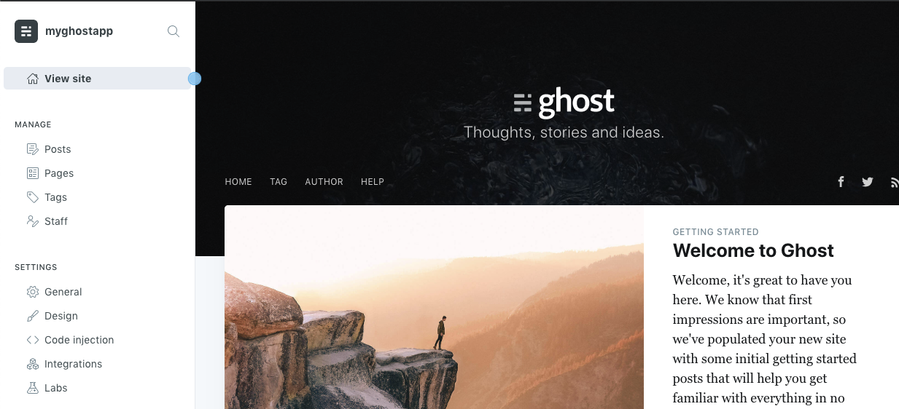
On the far left, choose Posts.
Choose New post!
Put your cursor on the Post Title and change it. Write the title as Test. It is important that you use the word Test because it will help us query the Database for it later.
Write anything you like in the text body, for example:
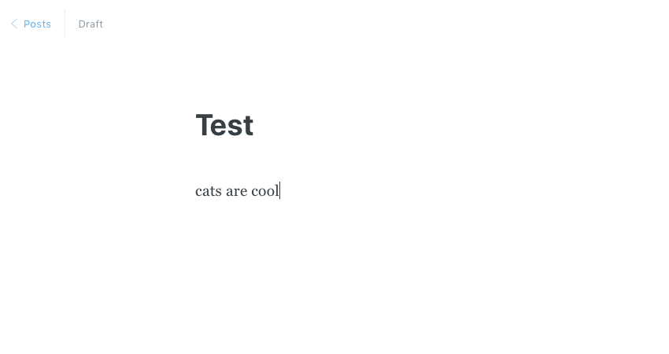
To check the filesystem, upload an image. It can be an image of anything you like, but the image file must be called cat.jpg so that you can search for it later.
💁♂ A quick Google search will help you find a nice cat picture. ;)
Alternatively, you may use this one:
xxxxxxxxxxhttps://upload.wikimedia.org/wikipedia/commons/thumb/2/28/Tortoiseshell_she-cat.JPG/800px-Tortoiseshell_she-cat.JPGTo use this image, open it in your browser. Then choose "Save as" and name it cat.jpg.
In the Ghost admin area, choose the gears icon that you should see in the top right. You should see this:
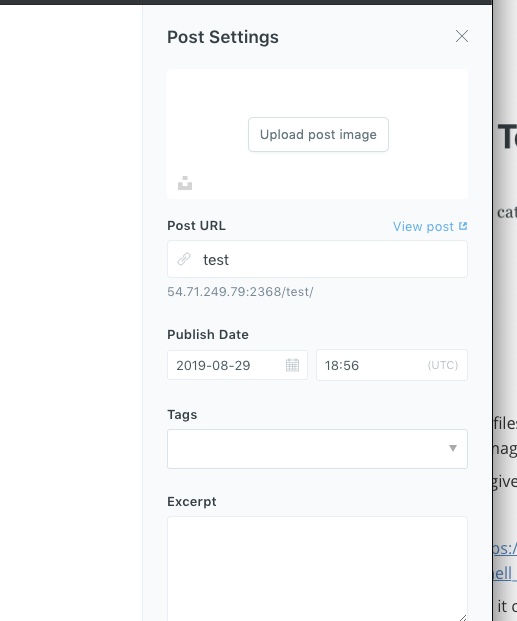
Click the upload post image and provide that cat.jpg
Close the upload screen (the cross in the top right).
From the top right, choose publish. Publish as "Set it live now".
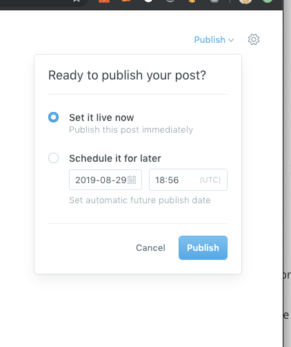
After it is published, return to the main site:
xxxxxxxxxxhttp://<FMI>:2368 #using your Public IP as aboveYou should see this:
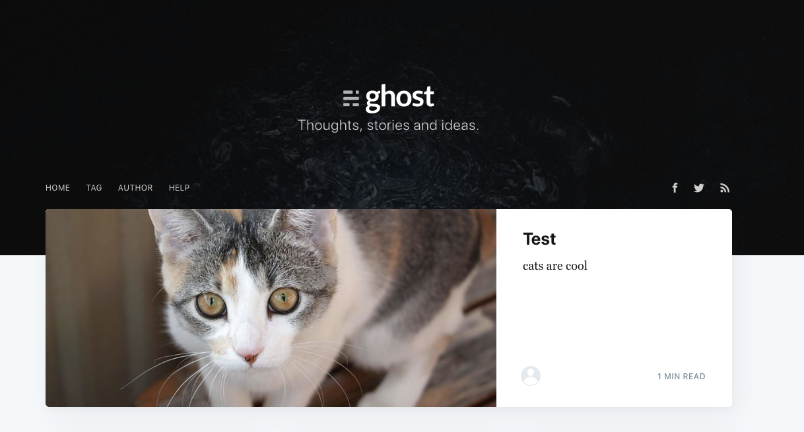
OK, great. You have added an image that will touch the Ghost filesystem, and you have added text that will affect the database.
Now you need to install the CloudEndure Agent on this machine so that CloudEndure can migrate all this over to Europe.
In this step, you will install the CloudEndure Agent on the application instance that's running your Ghost application.
Before you install the agent, you need to remove the UserData associated with your application instance.
Return to the Cloud9 tab where you should still be logged into the us-west-2 application instance. Run the following command, replacing <FMI> with your Instance ID:
NOTE: You can get your ApplicationInstance Instance ID from the us-west-2 Amazon Elastic Compute Cloud (Amazon EC2) console.
xxxxxxxxxxsudo rm /var/lib/cloud/instances/<FMI>/user-data.txt*Run the following command to download the CloudEndure agent installer:
xxxxxxxxxxwget -O ./installer_linux.py https://console.cloudendure.com/installer_linux.pyReturn to the CloudEndure User Console and look at the code that is under the Then run the Installer and follow the instructions section.
You will see For linux machines that the above wget was mentioned. You have done that bit, so now just use the code that is below the text Then run the Installer and follow the instruction:
It will look a bit like this example, but you will need to use the code that appears on your page:
xxxxxxxxxx#YOUR CODE WILL BE DIFFEENT #This is just an examplesudo python ./installer_linux.py -t AFF0-C206-1754-6321-E628-54AA-4535-4CCC-A45B-6A5C-9180-E931-97D8-4316-F008-64EF --no-promptAfter you run that in AWS Cloud9 and the installation completes, you should see something similar to this example:
xxxxxxxxxxThe installation of the CloudEndure Agent has started.Running the Agent Installer for a 64 bit system...Connecting to CloudEndure Console... Finished.All disks for replication were successfully identified.Downloading CloudEndure Agent... Finished.Installing CloudEndure Agent... Finished.Adding the Source machine to CloudEndure Console... Finished.Instance ID: i-0b2de155574f4a0f5.Installation finished successfully.When Ghost saves images, it does it by year/month and creates the original copy of the image as well as a transcoded version. So take a look at that while you are in here.
Run the following command, replacing 2019/10 with today's year/month accordingly, for example:
xxxxxxxxxxls /ghost-app/ghost/content/images/2019/10If your changes are touching the mounted EBS filesystem as expected, you should see the following:
xxxxxxxxxxcat.jpg cat_o.jpgExit out of the application instance:
xxxxxxxxxxexit#ubuntu@ip-10-16-10-247:~$ exit#logout#Connection to 10.16.10.247 closedWhat about the database? 🤔 That would have been updated with your "Test" post, too, right?
Yes it is, but that text goes over to the database instance, not this application instance. You will check that the database was updated in the next section.
OK, one machine done. Awesome! Now add the CloudEndure Agent to the database instance.
Your database instance will be at 10.16.11.80. To SSH into your database instance, run the following command:
xxxxxxxxxxssh -i labsuser.pem ubuntu@10.16.11.80#type yes when it asks, "Are you sure you want to continue connecting (yes/no)Before you install the agent, you need to remove the UserData associated with your database instance. Run the following command, replacing <FMI> with your the Instance ID of your database instance:
💁♂ You can get this by going to the EC2 console inus-west-2 and looking for the database instance.
xxxxxxxxxxsudo rm /var/lib/cloud/instances/<FMI>/user-data.txt*You will go through very similar steps as you did when you installed the agent on the application instance:
xxxxxxxxxxwget -O ./installer_linux.py https://console.cloudendure.com/installer_linux.pyReturn to the CloudEndure Uer Console and copy the code that is under the Then run the Installer and follow the instructions section. You may need to choose the question mark at the top right and choose How to Add Machines to see the instructions again.
⚠️ Yours will be different, this is just an example
xxxxxxxxxxsudo python ./installer_linux.py -t AFF0-C206-1754-6321-E628-54AA-4535-4CCC-A45B-6A5C-9180-E931-97D8-4316-F008-64EF --no-promptAfter the install finishes, you should see something similar to the following example:
xxxxxxxxxxThe installation of the CloudEndure Agent has started.Running the Agent Installer for a 64 bit system...Connecting to CloudEndure Console... Finished.All disks for replication were successfully identified.Downloading CloudEndure Agent... Finished.Installing CloudEndure Agent... Finished.Adding the Source machine to CloudEndure Console... Finished.Instance ID: i-00fcc9c29c6c0f44f.Installation finished successfully.While you are in your on-premises database instance, see where your "Test" post information went:
xxxxxxxxxxmysql -u ghost -p#Password:orangesAt the MySQL prompt, issue the following:
xxxxxxxxxxshow databases;You should see:
xxxxxxxxxx+--------------------+| Database |+--------------------+| information_schema || ghost_prod || mysql || performance_schema || sys |+--------------------+5 rows in set (0.00 sec)To select the ghost_prod database, run the following commands:
xxxxxxxxxxuse ghost_prod;xxxxxxxxxxSELECT * FROM posts WHERE title = "Test";You should see some really pretty output like this 😉, similar to the following:
xxxxxxxxxx+--------------------------+--------------------------------------+-------+------+--------------------------------------------------------------------------------------------------------+----------------------+--------------------------+---------------+---------------------------------+----------+------+-----------+--------+------------+------------+------------------+-----------+---------------------+------------+---------------------+------------+---------------------+--------------+----------------+--------------------+--------------------+----------+----------+----------------+---------------+---------------+---------------------+-----------------+---------------+| id | uuid | title | slug | mobiledoc | html | comment_id | plaintext | feature_image | featured | page | status | locale | visibility | meta_title | meta_description | author_id | created_at | created_by | updated_at | updated_by | published_at | published_by | custom_excerpt | codeinjection_head | codeinjection_foot | og_image | og_title | og_description | twitter_image | twitter_title | twitter_description | custom_template | canonical_url |+--------------------------+--------------------------------------+-------+------+--------------------------------------------------------------------------------------------------------+----------------------+--------------------------+---------------+---------------------------------+----------+------+-----------+--------+------------+------------+------------------+-----------+---------------------+------------+---------------------+------------+---------------------+--------------+----------------+--------------------+--------------------+----------+----------+----------------+---------------+---------------+---------------------+-----------------+---------------+| 5d681faea4671620bacec6e8 | 715f563f-9d49-413f-8815-0e0920315a10 | Test | test | {"version":"0.3.1","atoms":[],"cards":[],"markups":[],"sections":[[1,"p",[[0,[],0,"cats are cool"]]]]} | <p>cats are cool</p> | 5d681faea4671620bacec6e8 | cats are cool | /content/images/2019/08/cat.jpg | 0 | 0 | published | NULL | public | NULL | NULL | 1 | 2019-08-29 18:55:42 | 1 | 2019-08-29 19:04:01 | 1 | 2019-08-29 18:56:23 | 1 | NULL | NULL | NULL | NULL | NULL | NULL | NULL | NULL | NULL | NULL | NULL |+--------------------------+--------------------------------------+-------+------+--------------------------------------------------------------------------------------------------------+----------------------+--------------------------+---------------+---------------------------------+----------+------+-----------+--------+------------+------------+------------------+-----------+---------------------+------------+---------------------+------------+---------------------+--------------+----------------+--------------------+--------------------+----------+----------+----------------+---------------+---------------+---------------------+-----------------+---------------+1 row in set (0.00 sec)As you can see, it references the cat.jpg in the application "content" file system. The text that is there reads "cats are cool", which of course they are. 😜
Now that everything is in order, you can exit out of MySQL and out of the database instance by running the following commands:
xxxxxxxxxxexitxxxxxxxxxxexit#logout#Connection to 10.16.11.80 closed.Return to the CloudEndure User Console to complete the next step.
In the CloudEndure User console, on the Machines tab you can check the data replication progress:
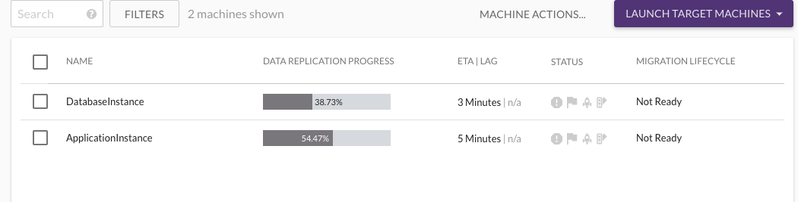
After the data replication progress is complete (which can take a while), both instances should have a flag and a rocket icon in the STATUS column. The Migration Lifecycle tab will also say Ready For Testing.
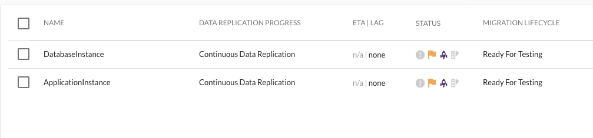
Select both instances. Choose LAUNCH 2 TARGET MACHINES and choose Test Mode.
Choose CONTINUE. The progress can be tracked at Job Progress at the left. Wait for the icons next to the Rockets to both turn purple.
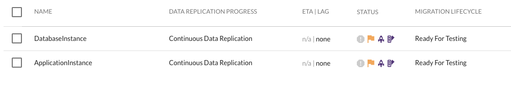
Return to the AWS Cloud9 tab.
Choose AWS Cloud9 at the left and choose Go To Your Dashboard.
Choose Services and EC2. At the top right, change to the EU (Frankfurt) Region.
Choose Instances and choose the ApplicationInstance. Note the VPC and Subnet ID as you will need them later. They should be called Cloud9 VPC and Cloud9 subnet.
Choose Services and Cloud9 in the Frankfurt region.
Choose Create environment. Name it lab4and choose Next step.
Under Network settings (advanced), choose the Cloud9 VPC. For the Subnet, choose the Cloud9 subnet.
Choose Next step, and then choose Create environment. Do some cleanup and close all the AWS tabs except for the new Cloud9 tab in Frankfurt.
Upload the PEM file by choosing File and Upload Local Files. Either drag and drop the labsuser.pem file or choose Select files and browse to the location where you downloaded the labsuser.pem file.
Run the following command:
xxxxxxxxxxchmod 4000 labsuser.pemTo get the Private IP address of the target application instance, run the following command:
xxxxxxxxxxaws ec2 describe-instances --region eu-central-1 --filters "Name=tag:Name,Values=ApplicationInstance" | grep -i -m 1 "PrivateIpAddress" NOTE: Take note of this IP address, as you will need it later.
You should see output similar to this example:
xxxxxxxxxx"PrivateIpAddress": "10.16.10.177", To get the Public IP address of the target application instance, run the following command:
xxxxxxxxxxaws ec2 describe-instances --region eu-central-1 --filters "Name=tag:Name,Values=ApplicationInstance" | grep -i -m 1 "PublicIpAddress"You should see output similar to this:
xxxxxxxxxx"PublicIpAddress": "3.124.67.235", Again, take note of this IP address, as you will need it later.
Currently, you have a clone of the Ghost application in the target (Frankfurt) Region, so it will have the same configuration information as the Ghost application in the old Region and will not match the new database in the target Region. It will still be pointing to the old database instance in us-west-1, which is not what you want. You will need to update the Ghost configuration on the target application instance.
To log into the target application instance, run the following command:
xxxxxxxxxxssh -i labsuser.pem ubuntu@<FMI> #using your PrivateIPAddress above#type yes when it asks, "Are you sure you want to continue connecting (yes/no)Now update the necessary configuration files, which is in the ghost-app mount (/ghost-app) owned by the ghost user. You need to assume that user first so that you can stop and start the Ghost process on this machine.
xxxxxxxxxxsu ghost-userPassword: pearsTo get the contents of the /ghost-app/ghost/config.production.json file and find the current IP address, run the following cat command:
xxxxxxxxxxcat /ghost-app/ghost/config.production.json | grep urlOutput:"url": "http://34.221.65.58:2368",To update the file, run the following sed command, replacing the <FMI>s:
xxxxxxxxxxsed -i 's/FMI/FMI'/ /ghost-app/ghost/config.production.jsonFor example:
xxxxxxxxxxsed -i 's/34.221.65.58/3.124.67.235'/ /ghost-app/ghost/config.production.jsonNext, you need to remove the following line since there will be symlinks pointing to the old IP:
xxxxxxxxxx "process": "systemd", "paths": { "contentPath": "/ghost-app/ghost/content"To do that, run the following command to do that:
xxxxxxxxxxsed '/systemd/d' /ghost-app/ghost/config.production.jsonThere are a few more changes you need to make before you are done.
You need to log back in as ubuntu user to change ownership of the mount destination. To do this, run the following sudo command:
xxxxxxxxxxsudo chown -R ghost-user:ghost-user /ghost-app/ghost/To re-create the correct symlinks using your new Public IP address, run a set up (systemd) as ghost (as you are currently ghost user):
xxxxxxxxxxghost setup systemdThen restart Ghost:
xxxxxxxxxxghost startYou should see the following:
xghost-user@ip-10-16-10-177:/ghost-app/ghost$ ghost startℹ Ensuring user is not logged in as ghost user [skipped]ℹ Checking if logged in user is directory owner [skipped]✔ Checking current folder permissions✔ Validating config✔ Checking memory availability✔ Starting Ghost------------------------------------------------------------------------------Your admin interface is located at: http://3.124.67.235:2368/ghost/💁♂ This IP addres will be different for you.
Now try viewing the Ghost website in the target AWS Frankfurt Region.
For example:
xxxxxxxxxxhttp://3.124.67.235:2368If everything migrated successfully to the Frankfurt Region, then you should see the following:
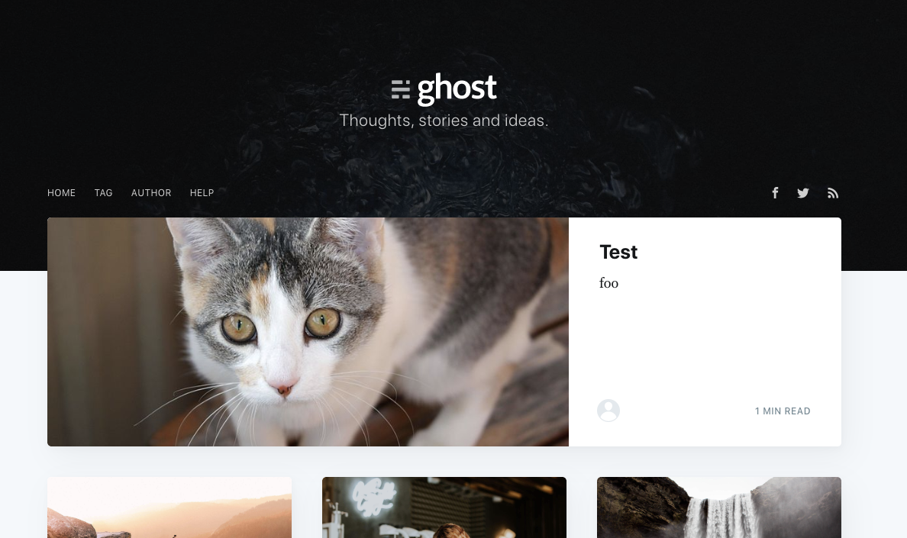
Congratulations! You have completed this exercise. You successfully migrated the database (where the word Test is stored). Also, the application EBS mount migrated with the application instance, which is where the cat picture is coming from.
Optional Step Edit the post further (/ghost) so you can see it working in Frankfurt and acting independently, that is, not linked with the source Ghost application in us-west-2.
You have now completed all the course labs. We hope you had fun!
%Lab Complete%
{kind=link}